顺路景点：
1. 定边盐湖｜免费｜游玩1h｜7月彩色盐田，明长城同框
2. 中卫沙坡头｜门票80元｜游玩2h｜黄河沙漠地貌
3. 武威雷台汉墓｜45元｜1.5h｜马踏飞燕出土地
4. 张掖七彩丹霞｜74元｜2h｜傍晚日落绝美（当日核心打卡）
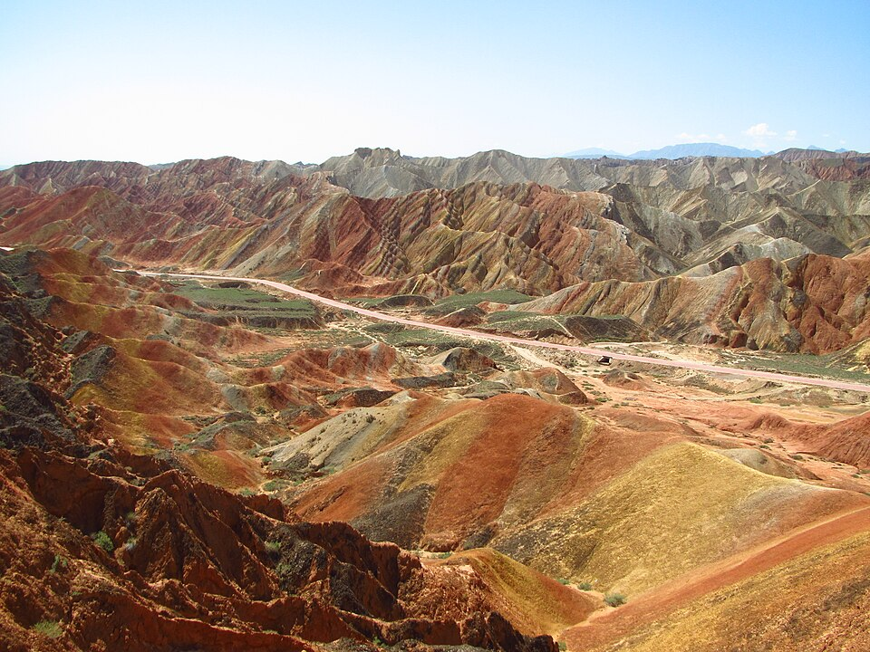
美食推荐：张掖臊面、大盘鸡
顺路核心景点（全程不绕路）：
1. 嘉峪关关城｜门票110元｜游玩2h｜明长城西起点，戈壁雄关
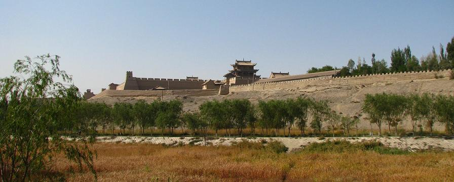
抵达敦煌后下午+傍晚游玩两大王牌景区：
2. 莫高窟｜A类票238元｜游玩3h｜千年壁画石窟，务必提前线上预约
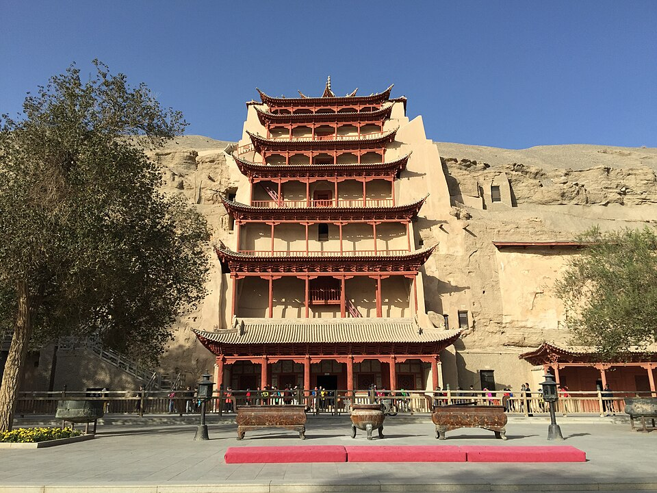
3. 鸣沙山月牙泉｜110元｜游玩2.5h｜傍晚沙漠日落、骑骆驼、月牙泉夜景
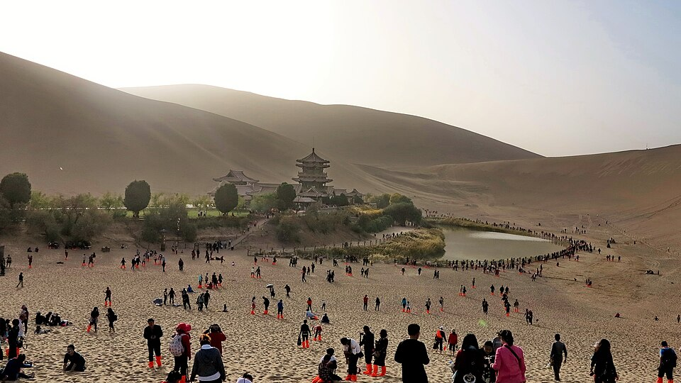
美食推荐：敦煌驴肉黄面、泡儿油糕、李广杏
顺路景点：
1. 大地之子戈壁雕塑｜免费｜30分钟拍照打卡
2. 达坂城风车群｜免费｜30分钟｜亚洲最大风电场
3. 国际大巴扎｜免费｜2h｜夜市美食、维吾尔风情
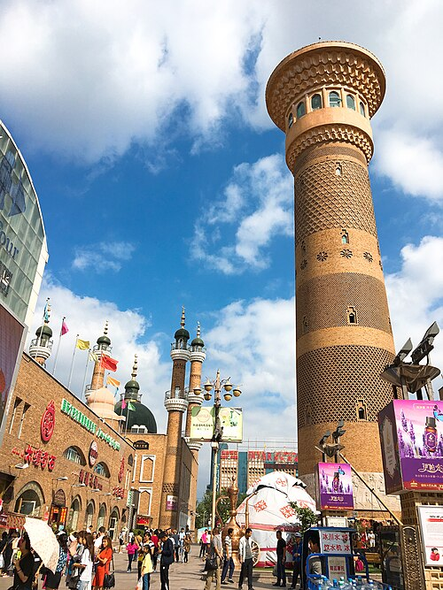
休整提示：采购水、零食、厚外套、车载物资；新疆全线安检，带好全部证件
景点：
1. 乌伦古湖｜免费｜30分钟｜戈壁大海
2. 可可托海地质公园｜门票90+区间36元｜3.5h｜额尔齐斯大峡谷、三号矿坑
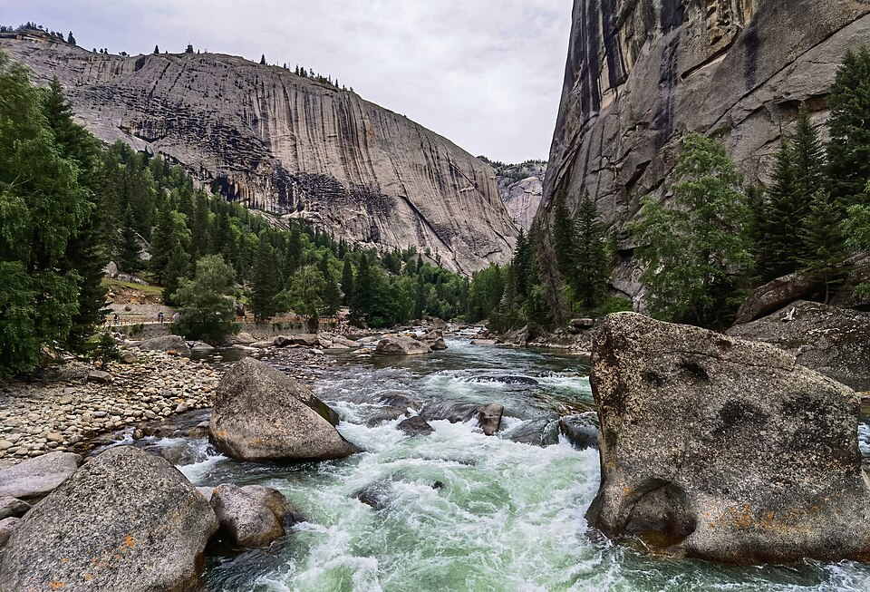
景点：五彩滩｜45元｜1.5h｜日落19:30-21点最佳，雅丹+额尔齐斯河
晚餐：河堤夜市烤冷水鱼、格瓦斯
景点：禾木景区｜门票50+区间52元｜全天游玩
玩法：哈登观景台、白桦林、禾木河、夜晚银河，次日清晨拍晨雾
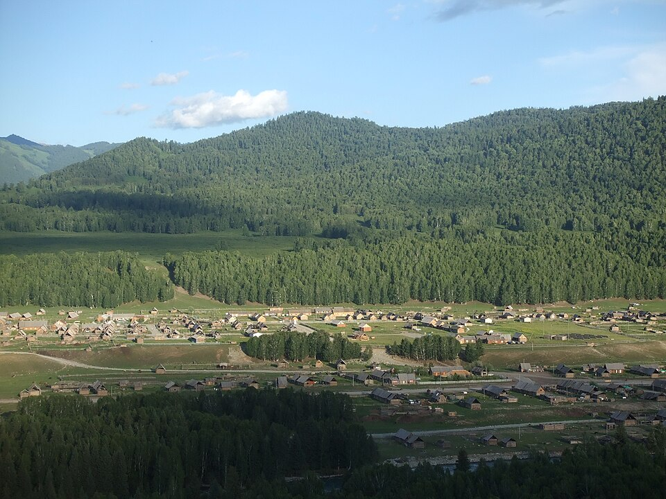
景点：喀纳斯大门票160+区间70，观鱼台20元｜总游玩6h
打卡：神仙湾、月亮湾、卧龙湾、观鱼台俯瞰喀纳斯湖
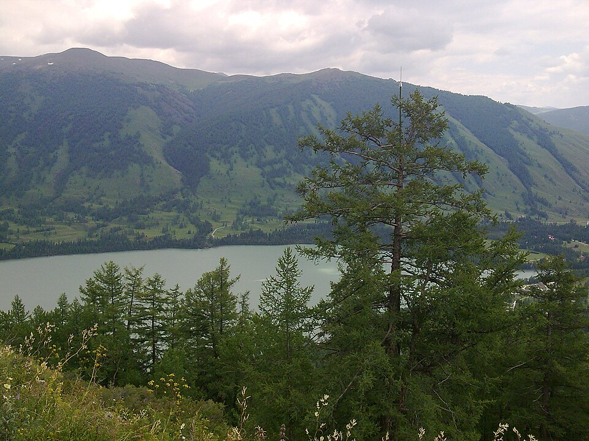
景点：乌尔禾魔鬼城｜60+区间20元｜2h｜日落雅丹地貌
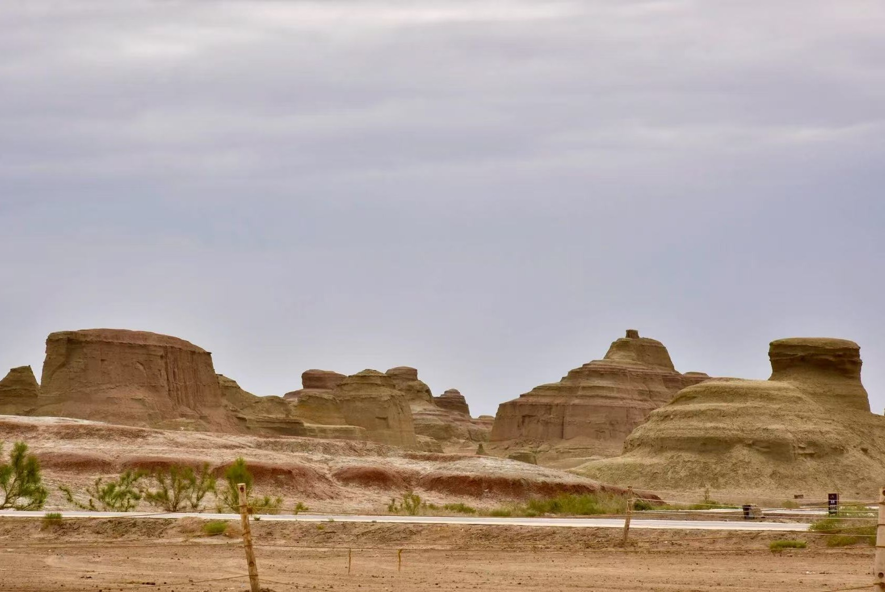
景点：赛里木湖自驾套票144元｜48小时有效，环湖5-6h
打卡：果子沟、点将台、天鹅湾、S湾公路大片，傍晚湖景日落
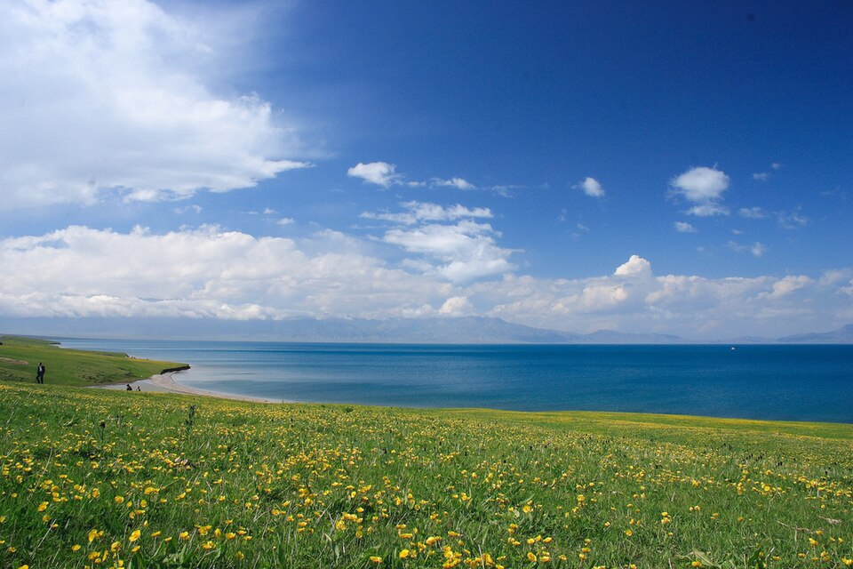
免费人文景点：
1. 果子沟大桥观景台｜免费｜20分钟
2. 喀赞其蓝色小镇｜免费｜1h｜蓝色民居、民族马车
3. 六星街｜免费｜1h｜手工冰淇淋、烤包子、民俗街区
景点：昭苏湿地公园天马浴河｜60元｜1.5h｜每日18点骏马踏河
伊昭公路沿途雪山草原全部免费，随时停车拍照
顺路打卡：特克斯八卦城｜免费｜30分钟，全城八卦布局
核心景点：那拉提空中草原｜95+区间140元｜4h｜雪山草原野花，可骑马
景点：巴音布鲁克｜65+区间90元｜2.5h｜九曲十八弯日落（7月底9个太阳倒影）
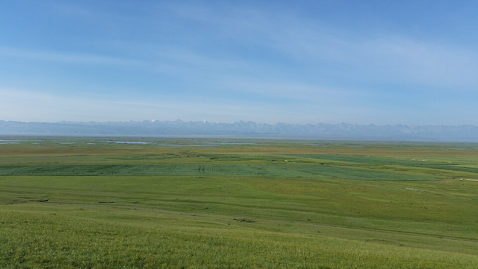
独库沿途免费打卡：乔尔玛烈士陵园、哈希勒根达坂雪山、唐布拉画廊
可选景点：天山天池｜95元｜3h｜瑶池仙境，时间充裕可顺路游玩
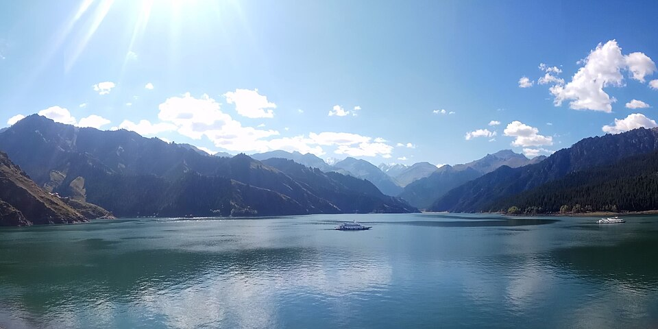
当日任务：采购干果特产、全车检查车辆，准备返程G7
顺路景点：江布拉克草原｜48元｜3h｜万亩麦田、天山怪坡，可自驾进景区
额济纳胡杨林外围免费打卡（夏季翠绿，无需购票）
| 景点名称 | 门票总价 | 游玩时长 | 备注 | 景区信息 |
|---|---|---|---|---|
| 张掖七彩丹霞 | 74元 | 2h | 日落最佳 | 查看信息 |
| 嘉峪关关城 | 110元 | 2h | 长城西起点 | 查看信息 |
| 莫高窟A类票 | 238元 | 3h | 必须提前预约 | 查看信息 |
| 鸣沙山月牙泉 | 110元 | 2.5h | 傍晚观赏最佳 | 查看信息 |
| 可可托海 | 126元 | 3.5h | 含区间车 | 查看信息 |
| 五彩滩 | 45元 | 1.5h | 日落时段 | — |
| 禾木 | 102元 | 全天 | 含区间车 | 查看信息 |
| 喀纳斯+观鱼台 | 250元 | 6h | 三湾徒步 | 查看信息 |
| 魔鬼城 | 80元 | 2h | 雅丹日落 | 查看信息 |
| 赛里木湖自驾票 | 144元 | 5-6h | 48小时有效 | 查看信息 |
| 昭苏天马浴河 | 60元 | 1.5h | 18点场次 | — |
| 那拉提草原 | 235元 | 4h | 空中草原 | 查看信息 |
| 巴音布鲁克 | 155元 | 2.5h | 九曲日落 | 查看信息 |
| 江布拉克 | 48元 | 3h | 返程顺路 | 查看信息 |
提示：门票价格、开放时间和预约规则可能调整，请以景区或政府文旅页面的最新公告为准。
1. 身份证、驾驶证、行驶证（新疆每站安检必查）
2. 边防证：户籍地办理，填写阿勒泰地区、白哈巴，免费
3. 三角警示牌、灭火器、车辆保险单
莫高窟旺季一票难求，出发前7天在「莫高窟参观预约网」预约A类票；下午进鸣沙山避开正午高温，带防沙鞋套。
短袖、长袖、冲锋衣、薄羽绒服；SPF50+防晒、墨镜、徒步鞋；山区/沙漠阵雨备雨具
油量低于一半立刻加满；荒漠路段200km无油站；备2箱饮用水、零食；山区信号差，充电宝常备
1. 独库、伊昭公路早7点前出发，避开12-18点拥堵；仅6-10月开放
2. 禾木、赛湖、敦煌民宿旺季溢价高，性价比优先住县城酒店
3. 西北、新疆菜分量极大，两人1荤1素足够；景区区间车票线上提前购买
4. 山路弯道严禁超车，牛羊横穿道路减速避让